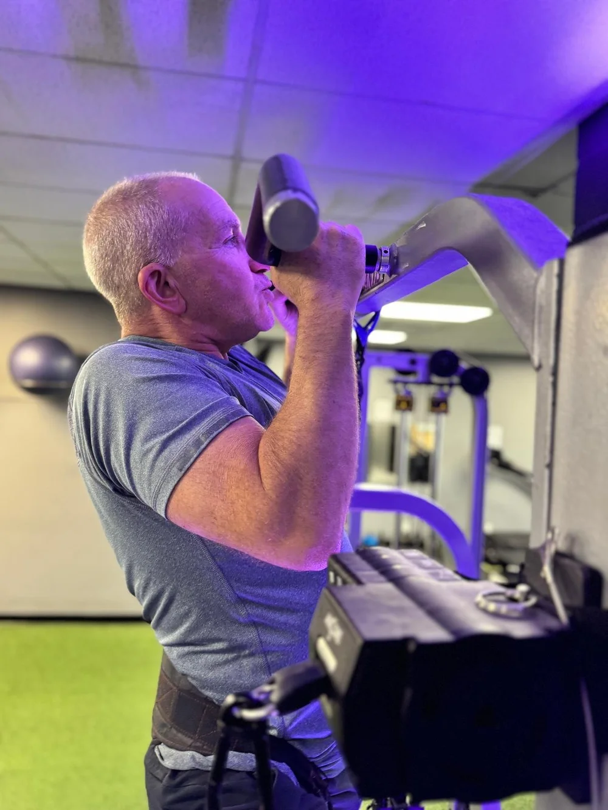
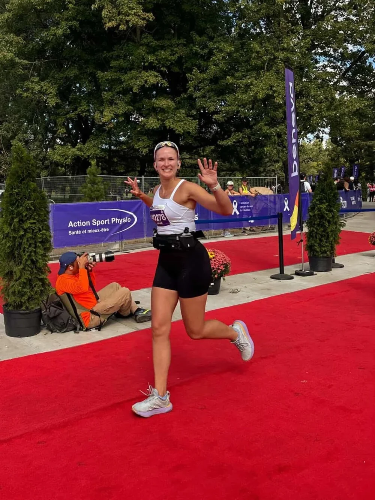
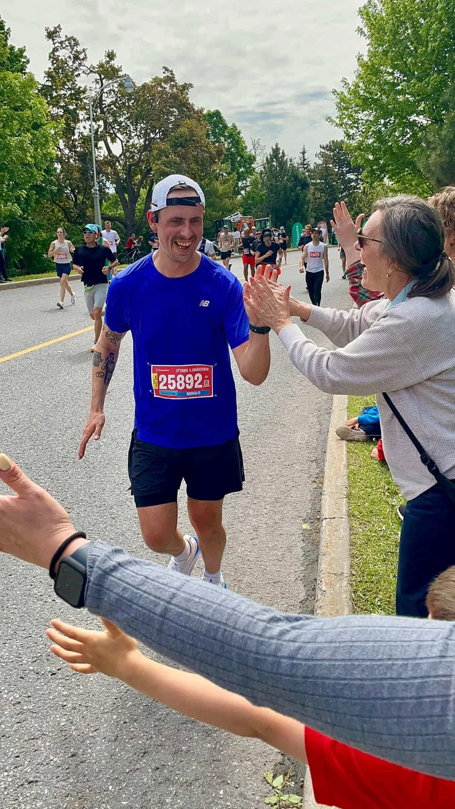
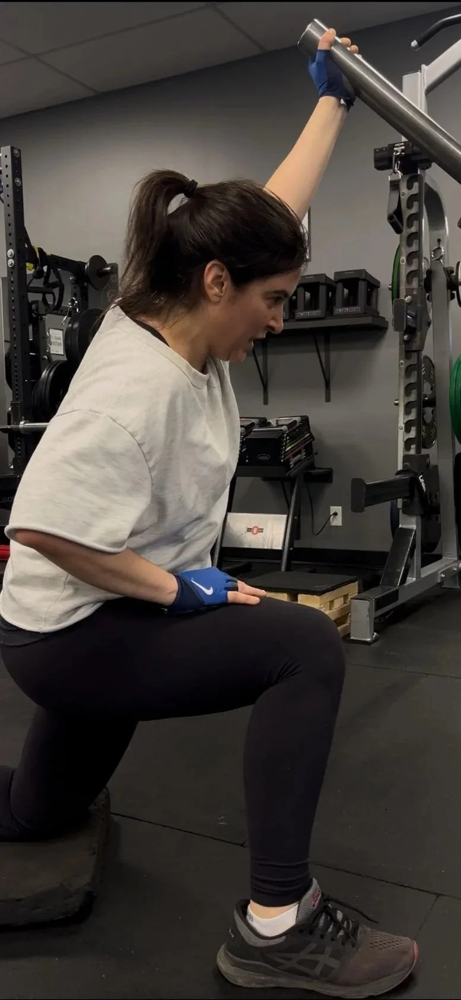
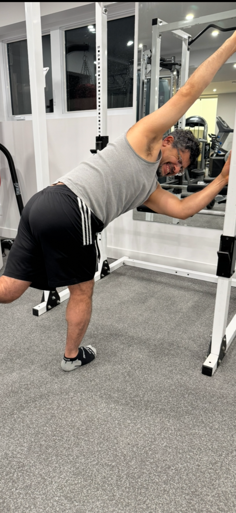
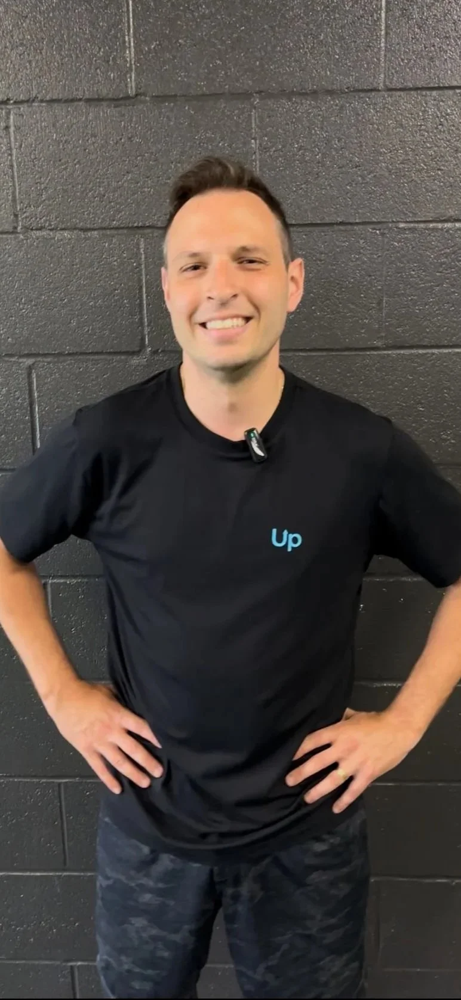

Client stories
Here are some incredible client transformations that remind me why I love what I do…

Howard
Where he started
Howard started training with me after he’d undergone back surgery and had stopped strength training entirely as a result. This, plus a previous bad experience with a trainer left him feeling unfit, and fearful of any movements that actually involved his back.
What we did
- Found safe, pain-free entry points to movement. Things that didn’t recreate pain.
- We stuck with those same movements for several months, and got really good at them.
- As he got stronger, new pain-free movements started to reveal themselves.
Where he is now
A few weeks ago, Howard demonstrated one of the most prime examples of back strength: the pull-up. He’s also stronger in all lifts, has lost 15lbs (by accident!) and for the first time in a long time is lifting weights without fear.

Josee-Anne
Where she started
Josee-Anne was running 30–45km/week, and strength training 3x/week. She prepped her meals and took really good care of her body. On paper, she was doing everything right. But she was still dealing with lower back tightness and deep hip pain after long distances.
What we did
- Modified her total training load
- Addressed her strength deficits
- Integrated rehab into her already busy program
- Tweaked nutrition so she was fuelling like an athlete
Where she is now
Josee-Anne now runs consistently without pain, which she recently told me has restored her LOVE for training. Strength work actually feels supportive of her goals, not stealing from them. She’s also entering this off-season with eyes on her next half- and full marathon PRs!

Richard
Where he started
Richard started working with me online with a history of ankle sprains, Achilles tendinopathy, repeat hamstring pulls, groin strains, tight hips and chronic low back pain. And as an athlete, he found himself sidelined from the sports he loved.
What we did
- Improved hip function through mobility & strength work
- Followed a program I designed specifically for him, and stuck with it for month after month
- Focussed on building strong feet, ankles and Achilles that would translate perfectly to running
Where he is now
Richard can now run completely pain free. His hips are the best they’ve ever felt, and he feels like an athlete again.

Pam
Where she started
Pam’s a surgical nurse, which I think is pretty cool. She often performs 12-hour procedures that require her to hold seriously heavy equipment for extended periods of time. It started taking a huge toll on her body and she developed low back, neck and shoulder pain that got so bad it started to affect her vision. She realised she had to take control of the situation, or risk being unable to work.
What we did
- Focussed on finding tolerable movements that didn’t recreate symptoms.
- Learned methods of self-managing pain when she was on her own.
- We didn’t miss a session for months on end (this is key).
Where she is now
Pam recently told me her pain has improved 90%. She feels confident in her abilities to perform her surgical work without physical limitations, and she’s also dropped 2 dress sizes. Awesome result.

Fady
Where he started
Fady had been dealing with daily chronic ankle pain for over 10 years. When he’d try to play soccer or go for a jog, he’d pay for it for days afterwards. He told me he was questioning not only his quality of life, but his entire future as an active adult. Fady booked himself a reconstructive surgery which should help him return to do what he loves without the constant backdrop of pain.
Our goal was simple: to prepare him for surgery by making his lower body as strong as possible.
What we did
- Refined basic foot mechanics
- Increased strength & stability of surrounding tissues
- Improved tendon function through plyometric training
Where he is now
Fady is able to load his ankle with significant improvement in pain levels, and he’s entering his surgery with a much higher ‘entry point’ than he would have otherwise. He recently told me that having seen what his ankle is capable of has allowed him to feel confident for a successful recovery post-op.

Gino
Where he started
Gino works in construction and was dealing with chronic shoulder pain for years after a work-related injury.
What we did
- Addressed mobility of his shoulder and mid-back, to reduce movement restrictions.
- Got really strong in a couple of pain-free movements.
- Learned that pain is a signal, not a sentence!
Where he is now
Gino just hit 18 holes down at the golf club, totally pain free. He’s also slamming medballs and lifting dumbbells every week. It’s not magic, it’s a combination of science, some good coaching, and a whole lotta hard work on his part.
Google reviews
I have been training with Michael for a couple months now and I have already seen so much improvement! I am a competitive dancer, so I was looking to improve my fitness to be a better performer. However, I have been dealing with shin splints and knee pain. Michael has been amazing at helping me adapt movements and train the right muscles to strengthen my legs. I haven’t had pain training in the past couple of weeks and have finally been able to return to normal movements, like jumping. I know I owe a lot of that to the exercises I did in training, so thank you!
I have been training with Michael for a few years now and my entire family has joined once a week. The workouts are tailored to each of our fitness levels, are at the right intensity levels for everyone, and have encouraged everyone to prioritise our Thursday nights to training with Coach Bower.
I’ve been training with Michael for nearly a year now. He’s helped me significantly with my chronic pain issues, gotten me stronger, feeling better than ever! But the thing I appreciate the most is the care he puts into making sure that, despite my limitations and fluctuating abilities (suspected hEDS), I am able to train pain-free, there is always an alternative available if I cannot do an exercise due to pain, information on how to manage it, tracking and reminders of how far I’d gotten, and just a very good, kind human that I feel absolutely comfortable training with.
Coach Bower is the absolute BEST!!! I’ve been training with him for over a year now and am always SO excited for my training sessions. He tailors the workout to your level of comfort and abilities, but still pushes you to work harder and get stronger! He also knows SO much about fitness, injuries, rehabilitation, anatomy, nutrition, etc. I’m always learning and never feel afraid to ask questions. Workouts are always so fun and chill, and have become one of the best parts of my week no doubt.
Our sessions have strengthened my muscles and improved my stability and hip strength, reducing pain. Michael’s attention and corrections during exercises are invaluable. We’ve worked together for months, and the results are clear. Highly recommend!
I’ve been working with Coach Bower for a while now, and he’s truly a game-changer. His personalized workouts are always spot-on, and his wealth of knowledge across all things wellness is truly unmatched. He really cares about you as a person, not just as a client, and knows exactly when to push you to reach your full potential. Training in Krav Maga with him was also a blast, and I’ve learned so much. Scheduling sessions is pain free, and I can confidently say Coach Bower is a trainer for life. Highly recommend!
Contact me
Interested in working together? Fill out some info and I’ll be in touch shortly. I can’t wait to hear from you!